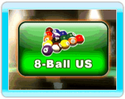
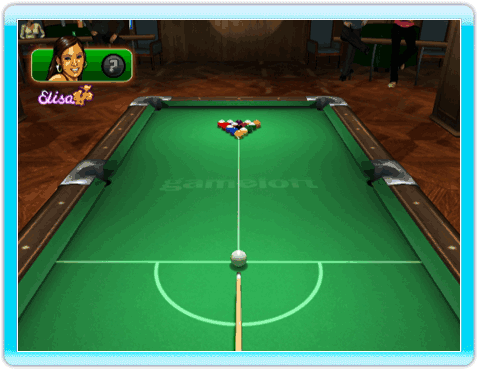
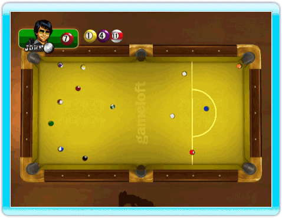

23 |
8-Ball US Rules |
 |
 One player must pocket balls numbered 1 through 7 (solid colors) and the other player must pocket 9 through 15 (stripes). The player who legally pockets the 8-ball following all the balls in their group wins the game. Lagging To determine who breaks, players each shoot a cue ball to the top rail and back toward the bottom rail. The player whose ball is closest to the bottom rail gets to break. This is referred to as lagging. Breaking To perform a legal break, a ball must be pocketed or the player must drive at least four numbered balls to the rail. If the break is not legal, it is a foul. The balls are re-racked and the next player breaks again.If a player scratches on a legal break shot, it is a foul. All balls pocketed remain pocketed (except the 8-ball). The table is open. If the 8-ball is pocketed on the break, the balls are re-racked and the next player takes the break. A player who sinks the 8-ball does not lose the game.  Open Table The table is "open" when the choice of group (stripes or solids) has not yet been determined. When the table is open, it is legal to hit a solid to then sink a stripe or vice-versa. However, when the table is open and the 8-ball is hit first, the shot is a foul.On all shots (except the break and on an open table), players must hit a ball in their group first and pocket a numbered ball or cause the cue ball or any numbered ball to contact a rail. Cue Ball in Hand Cue ball in hand. The player can place the cue ball anywhere on the table. |
 |
 |
 |